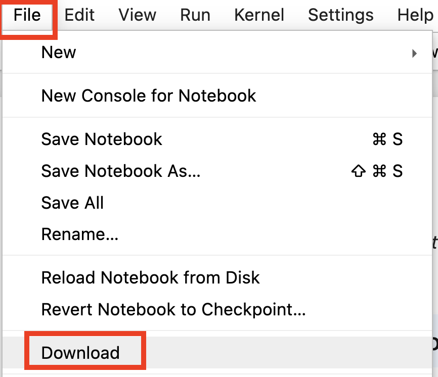
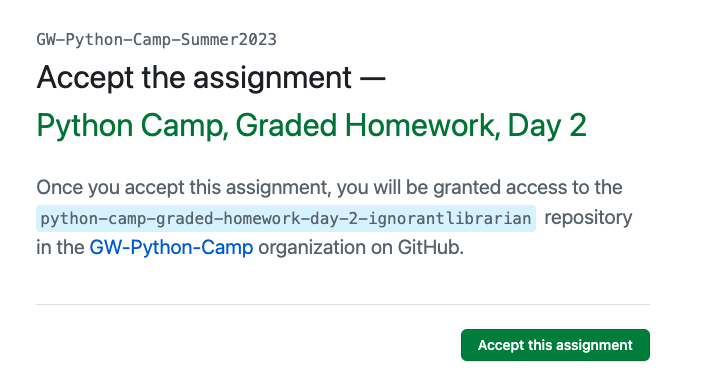
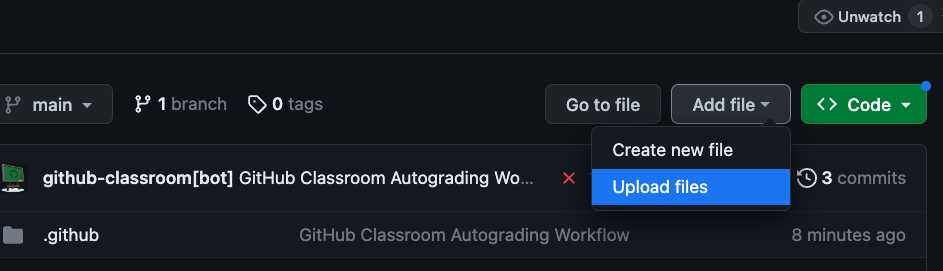

Homework for Python Camp#
In addition to the in-class team activities, Python Camp asks you to work through several self-guided lessons for homework, including a handful of exercises that you will submit using the GitHub Classroom autograder to receive a score. The purpose of the homework is to introduce concepts, syntax, and techniques that you will use during the team activities, so it is important that everyone on the team complete the homework lessons to the best of their ability on the days they are assigned.
The homeworks are designed to be completed individually, but you are also free to collaborate on them (including those you submit for a score). If you collaborate on the autograded homework, be sure to submit your own notebook for autograding if you want to receive the Python Camp certificate of completion.
Homework Format#
Each day’s homework lesson consists of a Python motebook with documentation, examples of code, and exercises that ask you to write code yourself. Hints and/or hidden solutions are provided for the latter, but you are strongly encouraged to try each exercise on your own before looking at the solution. - Just as we did for the in-class activities, you should open each homework notebook in JupyterHub (using the rocket icon at the top of the screen) and execute the code cells in order as you read through the notebook. Any changes you make to the notebook in JupyterHub will be saved to your JupyterHub account. - Please try your best to complete these notebooks on the day they are assigned; we’ll build on the concepts and practices they introduce in our team activities on the following day. 2. You must submit the final homework notebook for grading in order to receive the Python Camp Certificate of Completion. The grading is done automatically on GitHub Classroom, and you will have an opportunity to ensure that your work is correct before submitting. Please see the instructions for submitting the graded notebook below.
Submitting Graded Notebooks#
We’re using GitHub Classroom to track submission of this notebook. Please read the following instructions carefully, and let us know if you have any questions.
To complete the notebook, open it in JupyterHub (using the rocket icon in the upper left) and follow the instructions included with the notebook.
When you’ve successfully completed each exercise, the code cell in the
Testssection should run without any errors or other output. If you see anAssertionError, it will indicate the part of your code that is not behaving as expected.WHen you’ve finished your work, don’t forget to save your notebook in JupyterHub!
Download your notebook from JupyterHub to your own computer, using the
File -> Downloadcommand from the menu at the top.Depending on your computer setup, the downloaded notebook may be located in your
Downloadsfolder, on your desktop, or elsewhere. It should have the nameHW_Final_GR.ipynb. If you have downloaded this file before, the latest version may have a different name. In this case, you should delete the old file and rename the newly downloaded file so that it has the same name as the original.In the Python Camp roster, copy the link in the column associated with this homework assignment and paste it into a new tab on your web browser.
If you don’t have a GitHub account, you’ll need to create one. (GitHub is a widely used platform for sharing and collaborating on code.) You don’t need to use the same email address on your GitHub account as you are using for Python Camp, so if you already have a GitHub account under a different email address, feel free to use that one.
Once you’ve logged into GitHub, and if this is your first time submitting an assignment, you’ll be asked to select your email address from the GitHub Classroom roster. Please make sure you select the correct email address. This will link your GitHub account to that email address in our GitHub Classroom instance.
At this point, you should see a screen asking you to “Accept” the assignment in GitHub Classroom. Accepting the assignment will create a new GitHub repository under your GitHub account; that repository is where you’ll submit your completed notebook for grading.
Once you have accepted the assignment, you’ll see a screen telling you to wait while the repository (repo) is created. Refresh this screen after a few minutes, and you should see a link to your new assignment repo.
When you visit the link, you should see a screen like that below. This is a GitHub repo. The title of the repo should indicate the name of the assignment you’re submitting and your GitHub username.

You’ll also see some files listed in your repo, including one with the name of the homework notebook you’re submitting, e.g.,
HW_Final_GR.ipynb. At this point, all you need to do is upload the new version of this notebook that you downloaded from JupyterHub in step 4. To upload the file, click theAdd filebutton next to the greenCodebutton at the top, and then selectUpload file.Drag the notebook file from its location on your computer into the provided space (or click
Choose filesand select the file from the file navigator). Make sure the file has the exact same name as in the list of files on the previous GitHub repo screen.Click the green
Commitbutton at the bottom of the screen to complete the upload.
At this point, you should see the home screen for this assignment repo, same as in step 11. Assuming your code passes the required tests, you should see a green checkmark underneath the
Add filebutton. (If your code passed the tests when you executed the homework notebook, then it should pass the tests upon upload. If you encounter a problem at this stage, please let a Python Camp facilitator know.)
{kind=link}
{kind=link}
{kind=link}